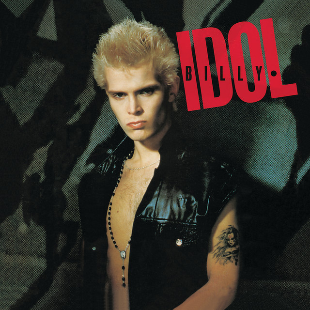

Videojocs
M'agrada jugar a videojocs, especialment els de aventura i estratègia. Normalment hi jugo al vespre o durant el cap de setmana per desconnectar.

Em dic Pol i soc estudiant de desnvolupament d'aplicacions web. M'agrada aprendre coses noves, treballar amb tecnologia i descobrir activitats interessants per al meu temps lliure.
M'agrada jugar a videojocs, especialment els de aventura i estratègia. Normalment hi jugo al vespre o durant el cap de setmana per desconnectar.
Escolto música gairebé cada dia, sobretot quan estudio. També m'agrada descobrir artistes i estils musicals nous

M'agrada fer esport per mantenir-me actiu i passar una bona estona. Intento practicar alguna activitat física diverses vegades per setmana.